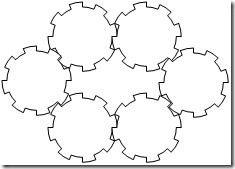

|
|
Archive for the ‘qed’ Category
Wednesday, September 9th, 2009
It's only Q.E.D. Hour 2 and we're already talking about closure.
No, it's not the end of Q.E.D. It's just the beginning. When I say "closure", I'm talking about two things. First, there's the language feature. Second, there's the concept. Either way, it is fundamental to proving software.
Language feature
As a language feature, closure is the ability to bring variables into scope and encapsulate them within a function. Different languages support this feature in different ways. In C#, it is supported in lambdas and anonymous delegates.
public Order GetOrder(string orderId)
{
return GetOrderRepository()
.GetSatisfying(o => o.OrderId == orderId)
.Query()
.FirstOrDefault();
}
The parameter orderId is available within the lambda, even though the lambda executes outside of the scope of this method.
As of Java 6, closure is supported only by anonymous inner classes. It is slated for becoming a first-class language feature in Java 7.
public Order getOrder(final string orderId) {
return Query
.from(getOrders())
.where(new Predicate<Order>() {
public boolean where(Order row) {
return row.getOrderId() == orderId;
}
})
.selectOne();
}
Again, the orderId parameter is available within the anonymous inner class. It will be set to the the correct value even though Predicate.where() is called by code not located in the method. In Java, the variables to be enclosed must be marked as "final" to ensure that they are not changed after the closure is created.
Factory methods
As a concept, closure can be used in several places. It doesn't take an explicit language feature to take advantage of the concept. In fact, the Factory Method pattern is often used to perform closure.
A factory method constructs an object, but hides its class. In doing so, it usually takes parameters that are injected into the new object. These parameters obey the laws of closure.
public IOrderService
CreateOrderService(
ITransaction transaction)
{
return new
OrderService(
transaction,
_accountsServiceProvider,
_catalogServiceProvider);
}
The transaction parameter is enclosed within the object. An object, just like a lambda, is a packet of behavior that can be executed later. The value of transaction is already set at the time that the behavior is executed.
Constructors
Notice that there are two other parameters passed into the OrderService. These two are set in the constructor of the factory itself.
private IServiceProvider<IAccountsService> _accountsServiceProvider;
private IServiceProvider<ICatalogService> _catalogServiceProvider;
public OrderServiceFactory(
IServiceProvider<IAccountsService> accountsServiceProvider,
IServiceProvider<ICatalogService> catalogServiceProvider)
{
_accountsServiceProvider = accountsServiceProvider;
_catalogServiceProvider = catalogServiceProvider;
}
The factory encloses some parameters and forwards them on to all of the objects it creates. In this way, closure can be nested.
Just like the "final" parameter in the Java example, we don't want these values changing. For the same reason that Java requires the "final" keyword for closure, fields initialized by the constructor should be considered immutable.
Closure is a useful mechanism for writing provable software. Whether we use it as a language feature or simply as a pattern, it allows us to bring values into a function or object. We can then prove interesting things about those values, as we will see in coming posts.
Posted in qed | No Comments »
Thursday, September 3rd, 2009
Let's take another run at proving that a watch movement with 20 parts has 19 connections.
 It is difficult to prove that any movement can be constructed one gear at a time by making just one connection with an existing gear. And here is a counter-example to demonstrate the problem.
A ring of six gears, all the same size, is a movement with one degree of freedom. If you construct this movement one gear at a time, you will connect the final gear to two prior components, not to just one. This movement has 6 gears and 6 connections, not the 5 that we want our proof to show.
Something is obviously wrong here. This movement is not what is intended by the problem, but it is not explicitly prohibited either. We need to change the problem:
Given: A movement with 20 moving parts having one degree of freedom and no redundant connections.
Prove: There are 19 connections among those parts.
Now our problem is precise enough. While it may seem wrong to change a problem in order to solve it, this is something that happens all the time in software. The requirements are never stated precisely. We always have to go back and ask questions. In the process, we refine the definition of the problem until we agree on something that can be implemented unambiguously.
Find a new induction
After changing our problem to make it provable, we still find that our original approach is difficult. In order to prove that any valid movement can be built on part at a time, we have to prove that there is always at least one component connected to only one neighbor. We have to prove the existence of a leaf.
While this is not a terribly difficult proof, there is an easier way. We could choose a less restrictive induction. Rather than assuming that we can build a movement one part at a time, we only need to know that we can build any movement from two smaller movements. This satisfies the requirements of inductive reasoning.
So first, to prove that we can construct any movement from two smaller movements, we just need to select any connection within the movement. Now break this connection. One of two things will happen:
- You are left with one movement, in which case the connection was redundant. The larger movement was invalid and therefore not covered by the proof.
- You are left with two movements, each with one degree of freedom. Since we broke only one connection, the others remain intact. Assuming the larger movement had no redundant connections, neither do the smaller ones.
So the process of building a movement out of smaller movements is valid. Now we can write our proof:
- Let Mj+k be the movement formed by connecting Mj and Mk.
- g(Mj+k) = g(Mj) + g(Mk), because we combined two sets of gears.
- c(Mj+k) = c(Mj) + c(Mk) + 1, because we added only one new connection.
- c(Mj+k) = g(Mj)-1 + g(Mk)-1 + 1, by applying the assumption of the induction.
- c(Mj+k) = g(Mj) + g(Mk) - 1, by association.
- c(Mj+k) = g(Mj+k) - 1, by combining 2 and 5.
Q.E.D.
Posted in qed | No Comments »
Wednesday, September 2nd, 2009
The problem was:
Given: A movement with 20 moving parts having one degree of freedom.
Prove: There are ___ connections among those parts.
The answer, of course, is 19. But the real exercise is in the proof.
This problem is solvable using a technique called inductive reasoning. Inductive reasoning is proving a statement in two parts. First, you prove it for a trivial case. Then, you prove that if it's true for a smaller case, it must be true for a larger case.
State the problem
To begin, we need to define some terms to help us reason about the problem. We'll define the terms M, g(M), and c(M) like this:
- Let M be a movement with one degree of freedom.
- Let g(M) be the number of gears in the movement.
- Let c(M) be the number of connections in the movement.
Using these terms, we can state the problem as:
- Proove that c(M) = g(M)-1.
Start with the trivial
The trivial case is a movement having a single gear. This movement has no connections, since there are no other gears to which it can connect. Written using our new terms:
- Let M0 be a movement having only one gear.
- g(M0) = 1.
- c(M0) = 0.
- c(M0) = g(M0) - 1.
Build upward
Now if I have a movement Mj, what happens when I add another gear to it? I end up with a movement Mj+1. I want to prove that the connections in Mj+1 are one fewer than the gears. Inductive reasoning lets me assume that this is true for Mj.
- c(Mj) = g(Mj) - 1.
- g(Mj+1) = g(Mj) + 1, because I added a gear.
- c(Mj+1) = c(Mj) + 1, because I connected that gear to exactly one previous gear.
- c(Mj+1) = g(Mj) - 1 + 1, by combining steps 1 and 3.
- c(Mj+1) = g(Mj) + 1 - 1, by commuting step 4.
- c(Mj+1) = g(Mj+1) - 1, by combining steps 2 and 5.
Q.E.D.
Not so fast
I was imprecise in my reasoning in a few places. While this still led to the correct answer in this case, it might have led to something completely wrong in a different problem.
Inductive reasoning requires that you prove that the steps you take to get from a smaller problem to a bigger one will cover all possible problems. You have to prove that you can build a movement one part at a time by connecting that gear to exactly one gear of the previous movement. While this is true, it is by no means obvious.
If we can't prove that our induction can build any movement, then we can't use it to prove statements about all movements. What about those that can't be assembled one part at a time? What we need is a different induction, one that more obviously covers all movements.
Posted in qed | No Comments »
Tuesday, September 1st, 2009
In Q.E.D. Hour, we will be proving things about our code. To get the group started in thinking about proof, I assigned some homework. It has to do with a watch.
The mechanism inside of a wristwatch is known as a movement. It has many moving parts, but all of those parts work together in unison. It measures only one thing. It has only one degree of freedom.
The secret to why the movement works is not in the parts. It is in the connections between the parts, where a connection is the point at which two moving parts touch. Which brings us to our proof.
Given: A movement with 20 moving parts having one degree of freedom.
Prove: There are ___ connections among those parts.
Fill in the blank. I'm sure you already know the answer. But the challenge is to prove it. This is representative of the types of proofs that we will write in Q.E.D. Hour.
Posted in dof, qed | No Comments »
Monday, August 31st, 2009
In our first Q.E.D. Hour, we covered the first section of Robert C. Martin's Design Principles and Design Patterns. This first section talks about the symptoms of rotting design.
When software is created, it is a pure rendition of the designer's intent. But over time, as the software changes, it begins to rot. The changes come from users of the system, but the rot comes from within. Robert C. Martin has identified these four symptoms of rotting design:
- Rigidity - The tendency for changes to ripple through the system, resulting in a resistance to change.
- Fragility - The tendency for seemingly unrelated components to break when you make a change.
- Immobility - The difficulty of isolating a component for reuse in a different system.
- Viscosity - The friction involved in making a change.
Unlike physical goods, software doesn't rot while it's sitting idle. Software rot occurs only as the system changes. These symptoms only manifest when we try to change the software. So we can eliminate rot in one of two ways: prevent the software from changing, or control its root cause.
Manage your dependencies
The root cause of rot is dependencies. For example, we use a service oriented architecture at work. Many of our services depend upon our Catalog service. That makes Catalog rigid, because we can't change it without affecting the others. Our Shopping service depends upon many other services, which makes it fragile. Changing anything in the system runs the risk of breaking Shopping. This also makes Shopping immobile, because we cannot reuse it without all of its dependencies.
Robert Martin's paper goes on to describe how to invert dependencies in order to manage them. But in our Q.E.D. discussion, we left that for another day. First, we need to learn how to measure our dependencies. Proof is only possible based on the things you can see.
Right now, we are just interested in static dependencies. These are the dependencies between different pieces of code. Later, we'll talk about dynamic dependencies. Dynamic dependencies occur between different pieces of data. Static dependencies occur at compile-time, while dynamic dependencies occur at run-time.
There are six static dependencies visible from the public interface of a class. These are the types of:
- The base class
- Implemented interfaces
- Constructor parameters
- Method parameters
- Method returns
- Properties
If your class accepts returns or inherits a type, then it depends upon that type. These dependencies are visible dependencies, since consumers of your class can see them.
There are several dependencies hidden from the public interface of a class. Four most common are:
- Internally created objects
- Static methods of other classes
- Extension methods
- Singletons
If your class takes on any of these dependencies, consumers of your class cannot tell. You run the risk of making your code rigid, fragile, and immobile by having hidden dependencies.
Here's my solution
Make dependencies more visible to reduce rot. Turn hidden dependencies into visible dependencies.
Turn internal object creation into a factory. If you need to create a new object, don't just new one up. Delegate that function to a factory. No "new"s is good news.
Turn static method calls into strategies. Calling static methods directly leads to procedural dependency. You are telling the compiler not just what to do, but also exactly which implementation should be used to do it. Instead, use a strategy. Then you can inject the right implementation for each situation without breaking the caller.
Extension methods are a special case of static methods. It is extremely difficult to track dependencies on extension methods, especially since the name of the class declaring the extension method appears nowhere within the code. You have to study the "using" declarations to find them. Extension methods are best used to add behavior to an interface without requiring implementers to add code. Extension methods are worst used as stupid compiler tricks. And don't even get me started on extension methods that check for null.
Probably the worst hidden dependency is the singleton. The problem isn't that there is only one instance. The problem is that anybody can depend upon it. If your class uses a singleton, there is no way of seeing this dependency from the outside. Singletons tend to be very rigid, since so many other classes depend upon them. Avoid the singleton pattern. Instead, rely on an IoC container to inject a single implementation of an interface into all components that require it. This turns a hidden dependency into a visible one (a constructor parameter).
Making all of your dependencies visible is the first step to managing them. Only then can you hope to fight software rot.
Posted in qed | No Comments »
Sunday, August 30th, 2009
This week marked the inauguration of Q.E.D. Hour. This is a weekly lunch hour where we talk about techniques for writing provably correct software. The goal of Q.E.D. Hour is to gain confidence in our code.
There are several ways to build confidence in your code. You can write specifications to record what the user wants or how you intend to build it. You can single-step through it in the debugger. Or you can write unit tests.
The problem with all of these confidence builders is that they can only give you confidence in the situations that you've thought about. They can't tell you anything about the situations that you haven't considered.
What if the user does something not in the use case or user story? Do you write another use case to cover that scenario? When does it stop? Can you ever write enough use cases?
You can see what the code is doing when you single-step through it in the debugger, but what would it do if you passed in different parameters? Can you every do enough debugging?
You can see that every unit test you've written passes. What about the unit tests you haven't written? How do you know that the code is correct for all situations? Can you ever write enough tests?
Even 100% code coverage doesn't save you. The line that references "Customer.Name" is covered by tests, but what happens when Customer is null?
Mathematical proof is the only way to know that code is correct under all possible conditions. All of the other techniques are empirical. They only verify the code in one situation. Proof, on the other hand, is deductive. It verifies code for an entire class of situations.
Both empirical and deductive confidence builders are required. Without empirical evidence, you can't be sure that you wrote the code correctly. But without deductive proof, you can't be sure that you wrote the correct code.
Posted in qed | No Comments »
Thursday, August 13th, 2009
The constructor has a very powerful contract, and one that the compiler proves. The constructor is called once and only once.
We can use this promise to prove some very useful things. We can prove that required properties are set. We can prove that A happens before B (as we can with other prerequisite techniques). But more strongly, we can prove that A does not happen after B.
Required properties
A constructor has to be called. There is no other way to get an instance of an object. If there are any required properties, they should be constructor parameters. Otherwise, there is no way to prove that they've been set.
class ReportRequest
{
// Required parameters.
private User _requestedBy;
private Company _requestedFor;
// Optional parameters.
private DateTime? _fromDate;
private DateTime? _toDate;
public ReportRequest(User requestedBy, Company requestedFor)
{
_requestedBy = requestedBy;
_requestedFor = requestedFor;
}
public User RequestedBy
{
get { return _requestedBy; }
}
public Company RequestedFor
{
get { return _requestedFor; }
}
public DateTime? FromDate
{
get { return _fromDate; }
set { _fromDate = value; }
}
public DateTime? ToDate
{
get { return _toDate; }
set { _toDate = value; }
}
}
We can prove that the user requesting the report and the company for which the report is requested are specified. The filter parameters are optional.
Immutable properties
Once a constructor is called, it cannot be called again. This is an extremely powerful contract, and can be used to prove that properties can't change. In the above example, the RequestedBy and RequestedFor properties are immutable. They can only be set by the constructor, which can only be called once.
Immutability is an example of the statement A does not happen after B. A) the property changes. B) the property is set. The property does not change after it is set.
There are other statements of this form that the constructor can prove. For example, a connection string cannot change after a database connection has been established. Here's a snippet of the ADO.NET SqlConnection class:
public class SqlConnection
{
public SqlConnection();
public SqlConnection(string connectionString);
public string ConnectionString { get; set; }
}
Do you see the problem? You cannot prove that the connection string does not change. This class has guard code that throws an exception if you do so. It would be a simple change to make this contract provable:
public class SqlConnection
{
public SqlConnection(string connectionString);
public string ConnectionString { get; }
}
Don't waste the constructor
Using a constructor to prove a contract is a powerful capability. It is weakened when the constructor is used for other things.
public class User
{
private string _userId;
private string _firstName;
private string _lastName;
public User(string userId) :
this(userId, string.Empty, string.Empty)
{
}
public User(string userId, string firstName, string lastName)
{
_userId = userId;
_firstName = firstName;
_lastName = lastName;
}
public string UserId
{
get { return _userId; }
}
public string FirstName
{
get { return _firstName; }
set { _firstName = value; }
}
public string LastName
{
get { return _lastName; }
set { _lastName = value; }
}
}
This class has a weak constructor. The name of a user can change, but the ID cannot. An overloaded constructor initializing the name is provided for convenience. But this convenience comes at a price. It is more difficult to see that the user ID is required and immutable. It's still provable, but that information is not called out.
Don't overload the constructor. Don't use it for convenience. Don't initialize mutable properties. When a constructor is used only to set required and immutable properties, the intent is clear, and the proof is easy.
Posted in qed | No Comments »
Tuesday, August 11th, 2009
Every piece of code is a theorem. It is a sequence of logical conclusions, each based on the one before, leading up to desired behavior. To validate that behavior, you need to prove the theorem. Even though most compilers don't prove those theorems for you, they can still provide some assistance.
We often have to call methods in a certain order. One method is a prerequisite, the other its successor. For example, we need to validate a shopping cart before we check out. Typically, this is hard to prove.
public class ShoppingCart
{
/// <summary>
/// Validate the shopping cart. Throws
/// ShoppingCartException if there is a problem.
/// </summary>
public void Validate() { }
/// <summary>
/// Checkout and provide payment for a shopping
/// cart. Requires that Validate() is called first.
/// </summary>
/// <param name="paymentMethod">Method used to pay
/// for the items in the car.</param>
public void Checkout(IPaymentMethod paymentMethod) { }
}
The contract is clear, but how do we prove that the caller is following the rules? One way is to keep an internal flag. Set it in Validate(), and check it in Checkout(). If the flag is false, throw an exception.
While this technique works, it is not ideal. It is really no different from a guard clause. It's just a different form of defensive programming. Besides, exceptions are for problems that occur even in well-written software. Calling Checkout() without calling Validate() is a defect, and should never happen at all.
Return from a prerequisite
If we change the interface, we can prove the contract at compile time. It won't need to be verified at run time. One way to do this is to put the successor method into the return of its prerequisite.
public interface IValidatedShoppingCart
{
/// <summary>
/// Checkout and provide payment for a shopping
/// cart.
/// </summary>
/// <param name="paymentMethod">Method used to pay
/// for the items in the car.</param>
void Checkout(IPaymentMethod paymentMethod);
}
public class ShoppingCart
{
/// <summary>
/// Validate the shopping cart. Throws
/// ShoppingCartException if there is a problem.
/// </summary>
public IValidatedShoppingCart Validate() { }
}
The compile-time contract is strong enough that it could be removed from the comment. It's obvious to the caller that they have to call Validate() first.
Pass a parameter to the successor
Another way to prove the contract as compile time is to pass the prerequisite as a parameter to the successor. We could, for example, prove that the caller needs to get a credit card approved before using it to make a purchase. Here's the hard way.
public class CreditCard : IPaymentMethod
{
/// <summary>
/// Create a credit card for a customer.
/// </summary>
/// <param name="customerInfo">Information
/// about the card holder.</param>
public CreditCard(CustomerInfo customerInfo) { }
/// <summary>
/// Request approval for a credit card. If
/// approved, return the payment. If not,
/// CreditCardException is thrown.
/// </summary>
public void Approve() { }
}
We could set a flag when Approve() is called, and check it when the IPaymentMethod is used. But again, it is defensive. There is a better way.
public class CustomerInfo
{
/// <summary>
/// Request approval for a credit card. If
/// approved, return the payment. If not,
/// CreditCardException is thrown.
/// </summary>
/// <returns>Payment that can be used to
/// purchase items.</returns>
IPaymentMethod Approve() { }
}
We've taken away the ability to create a CreditCard, and hidden it in Approve(). The result of Approve() is a parameter to Checkout(). We've proven that the caller must call the prerequisite before the successor.
A simple rearrangement of interfaces can turn a difficult-to-enforce API into one that the compiler can prove. Just recognize which methods are prerequisites of others, and use their returns to call the successors.
Posted in qed | No Comments »
Thursday, August 6th, 2009
My development process is deeply mathematical. It is based on the work of Bertrand Meyer and other computer scientists. Math is severely under represented among today's TDD/YAGNI/Agile/anti-BDUF digerati. I like to think through the problem before putting hands to keyboard, and I don't like being told I'm wrong for doing so. So to fill the void, I will be presenting my own mathematically-based process.
When people hear "math", they get scared. They think about how they struggled through trig class, or how statistics kicked their butts. If your palms sweat when you think about geometry, please calm down and bear with me. The math that we are going to talk about is not hard. You just have to think things through logically.
Null reference exceptions
Even though my process begins away from the keyboard, I'll begin this discussion with code. We can work backwards from there.
Your first exercise is to prove that this code does not throw a null reference exception.
class DogLover
{
public void BuyAPet(Store store)
{
Pet pet = store.BuyDog();
if (pet == null)
throw new Exception("No dogs were available.");
else
pet.Feed();
}
}
We don't know anything about the BuyDog() method. It may return null or it may not. We have to check the contract. Not many programming languages have a way to encode a contract (Eiffel and Spec# are the only two that come to mind), so we usually rely on comments if we write a contract at all. Here's the contract for BuyDog():
/// <summary>
/// Buy a dog from the pet store.
/// </summary>
/// <returns>A dog if one is available, or null if they are out of stock.</returns>
public Pet BuyDog()
{
// ...
}
So the contract tells us that BuyDog() could return null. That is its postcondition: the part of the contract that promises what will be true. Based on this postcondition, we cannot prove that pet is not null right after the call.
But we do have a check in the code. As you enter the "else", we know that the "if" condition is false. Therefore, pet != null. pet.Feed() does not throw a null reference exception.
That is the complexity of proof that I'm talking about. It's really easy to do. Much easier than anything you'll see in Euclid's Elements.
Preconditions
Go back and check the code again. There is a case that we did not consider. We proved that pet.Feed() will not throw, but we did not prove that store.BuyDog() is safe. There are two ways to do so: add a check, or add a precondition.
If we add a check before store.BuyDog(), then the same proof as above applies. This is known as "defensive programming". I personally do not like defensive programming because of all the noise it adds to code. I much prefer preconditions.
A precondition is part of the contract. It is a requirement that certain conditions must be true before you call a method. We add a precondition like so:
/// <summary>
/// Buy a pet from a store.
/// </summary>
/// <param name="store">The store from which to buy the pet.
/// Must not be null.</param>
public void BuyAPet(Store store)
{
// ...
}
Now the caller knows that he cannot pass null.
But this comment did nothing to change the behavior of the code! How does this solve the problem?
The problem is not what the code actually does. The problem is that you couldn't prove that the code worked. Now you can. The BuyAPet() method lives inside of a larger system. If there ever was a problem, you would know that the author of BuyAPet() proved his code; the caller did not. Therefore the bug is in the calling code.
Most compilers do not do this proof for you. Eiffel verifies contracts at run time, not at compile time. Spec# can do some simple proofs at compile time (including this one), but is not yet adopted for commercial use. Still, if dynamic languages can get away with not checking types until run time, I'm fine with not checking contracts until run time. That's what unit tests are for.
Predicates
Let's modify the code a bit.
/// <summary>
/// Buy a pet from a store.
/// </summary>
/// <param name="store">The store from which to buy the pet.
/// Must not be null.</param>
public void BuyAPet(Store store)
{
if (store.DogsInStock < 1)
throw new Exception("No dogs were available.");
Pet pet = store.BuyDog();
pet.Feed();
}
We've removed the check for pet == null. Can you prove that this code is safe?
You still can if you define a predicate on Store.
/// <summary>
/// The number of dogs available for sale.
/// </summary>
public int DogsInStock { get; private set; }
/// <summary>
/// Buy a dog from the pet store.
/// </summary>
/// <returns>A dog if DogsInStock > 0, or null otherwise.</returns>
public Pet BuyDog()
{
// ...
return null;
}
The postcondition on BuyDog() now references the property DogsInStock. We can use that in our proof. Now the steps are:
- If we reached store.BuyDog(), then store.DogsInStock < 1 is false.
- store.DogsInStock < 1 is false implies store.DogsInStock >= 1 is true.
- store.DogsInStock >= 1 implies store.DogsInStock > 0 (since DogsInStock is an integer).
- By the precondition of BuyDog(), DogsInStock > 0 implies that a non-null dog is returned.
- pet is not null.
- pet.Feed() does not throw.
I would usually not spell out these steps so explicitly, but these are the thoughts that go through my mind as I read and write code.
Concurrency
There is one small detail that I conveniently ignored in the prior proof. If we allow for concurrent access of the Store, then the proof is invalid. We cannot rely on DogsInStock > 0 when we get to step 4, since that might be changed in a different thread.
Concurrency is the devil for proofs. Functional languages lend themselves better to proof specifically because they disallow concurrent modification of an object; all objects are immutable, so there is no way that another thread could modify it. But hope is not lost.
In my code, I explicitly call out the parts that could be used concurrently. If nothing is said, then the code is not assumed to be thread-safe. You are therefore not allowed to call it concurrently. Since BuyAPet() makes no promise of thread safety, it would be incorrect to call it on multiple threads without guaranteeing that no other thread is using the same DogLover or Store. It is an implied precondition, but it is still a precondition.
I limit the amount of multi-threaded code in my applications. By the time I get to business logic, I've isolated the object and all of its parameters. They are either immutable or owned by that thread by the time the method is called. This allows me to use proof even in the face of concurency. And I can do so without adding noise to the business code in the form of locks or explicit preconditions.
Proof is a valuable tool in software development. Take a look at the code you wrote today and see if you can prove that it does not reference null.
Posted in qed | No Comments »
|

{kind=link}
{kind=link}